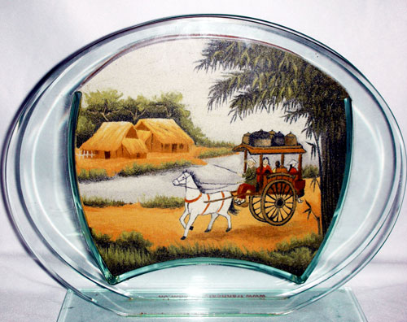

الادوات
الرسم بالرمل هو أحد أنواع الرسم الذي لا يحتاج إلى استعمال الريشة و الألوان، فقد برز مؤخراً هذا النوع من الفن، الذي لا يحتاج صاحبه إلا إلى حفنة من الرمل و حركات فنية بأصابع اليد لينتج الفنان لوحات رائعة الجمال.
فيديو تعليمي